1er Mesiversario (Septiembre)
No soy poeta, pero te expreso mis sentimientos, cuando me escribes, el temor se lo lleva el viento, tu amor y tu corazón es la cabaña en invierno, me refugia y me prepara un cálido asiento. Amo ser parte de tu vida, me alegra que no habrá despedida, que tu alma y mi alma coincidan, ha vuelto mi vida la más bendecida. Por este mes de relación, te declaro este poema, te demuestro con acción, que por ti, cuanto mi corazón quema. Eres talentosa, tu virtud rebosa, ademas que eres hermosa, tus valores son los que posan, en los cielos gozan, de tu mirada bondadosa. Aparte de amarte, quiero respetarte, que sepas que quiero valorarte, eres una obra de arte, dibujarte jamás sería replicarte. Divina hija de Dios, futura esposa mía, siempre juntos los 2, caminando en la única vía. Te amo mi 👑 Reina Andrea ❤️
2do Mesiversario (Octubre)
3er Mesiversario (noviembre)
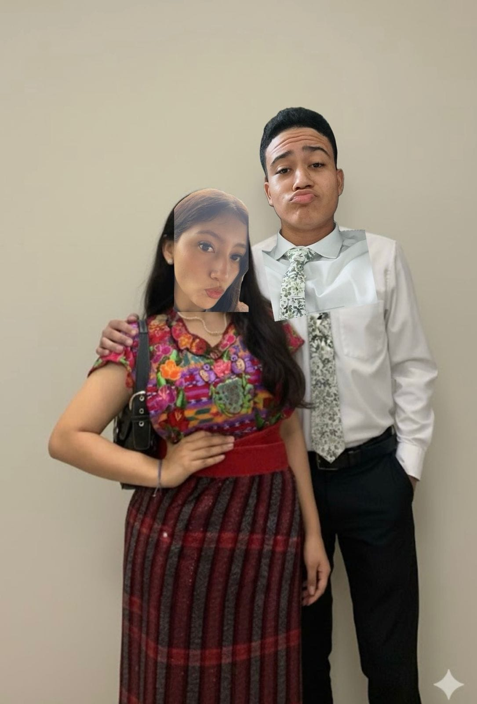
Tu novio cambia de color Tiengo camuflaje de camaleon Y para adueñarnos mi amor Nos sellaremos en el gran salón Eres el sol de mis dias, Y la luz que me levanta Su resplandor que me da energía Y su bello amor que me encanta Su sonrisa es arte Su voz es melodiosa Quiero amarte y cuidarte Y que seas mi futura Diosa Andrea bonita Dueña de mi corazón De tanto que palpita Que te vuelves mi canción Este bello mesiversario me ha de recordar Lo que un dia empezamos Y jamás se va a terminar Te amo con todo mi corazón Mi media manzana Tu presencia me hace mención De lo lindo que viviremos el mañana FELIZ MESIVERSARIO MI AMOOOOR
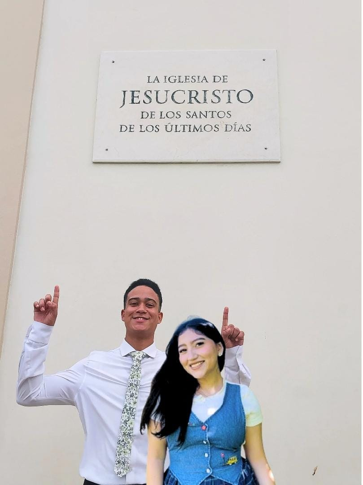
4ro Mesiversario (Diciembre)
De mi para ti
De ti para mi
De mi nena para mi5to Mesiversario (Enero)
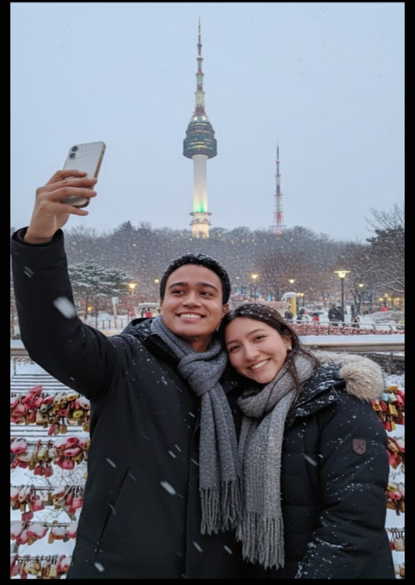

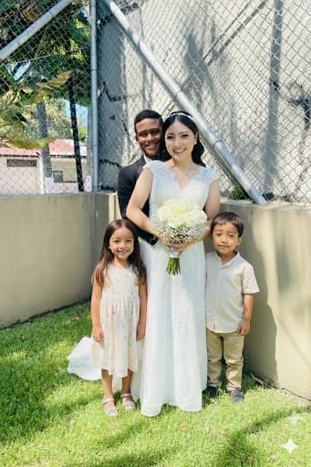
6to Mesiversario (Febrero)
PDF de mi bebita7mo Mesiversario (Marzo)
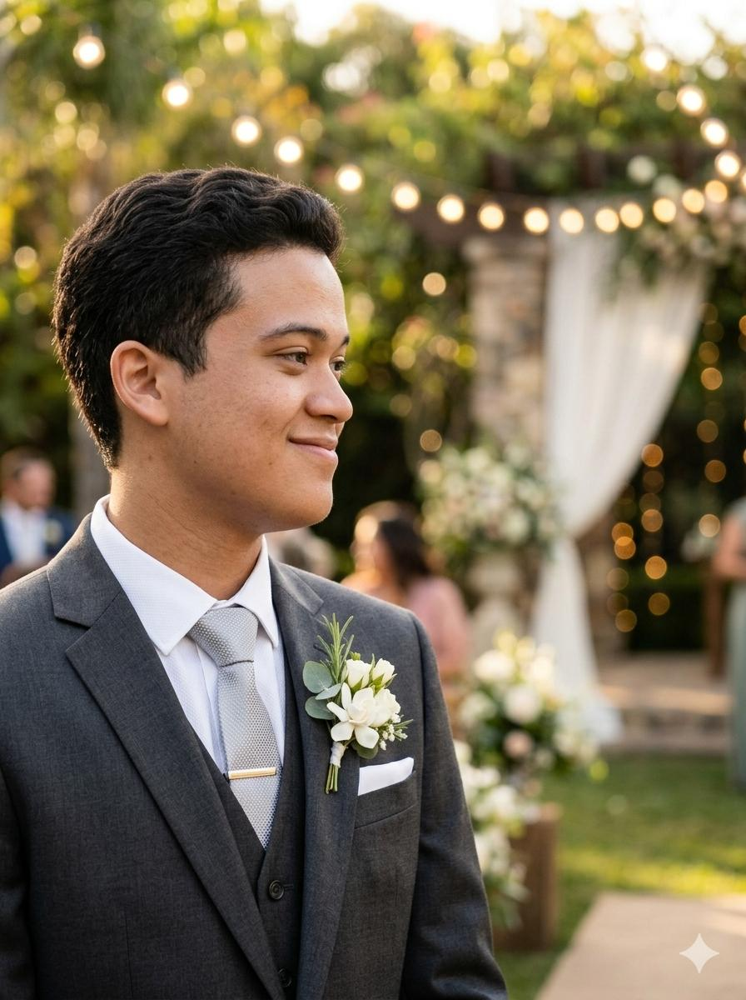
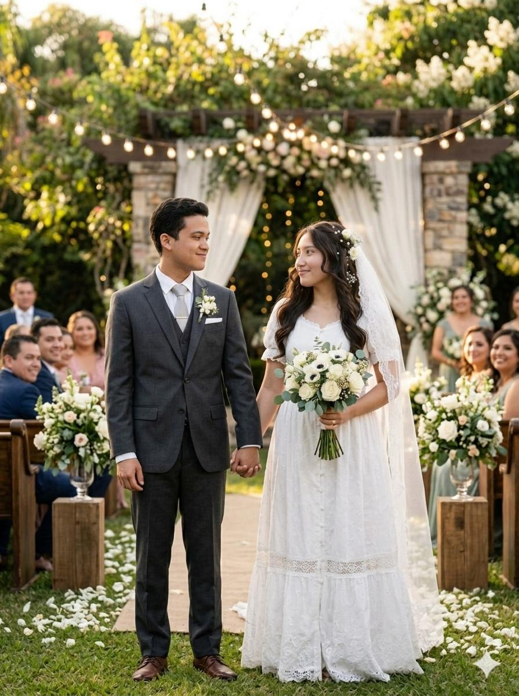
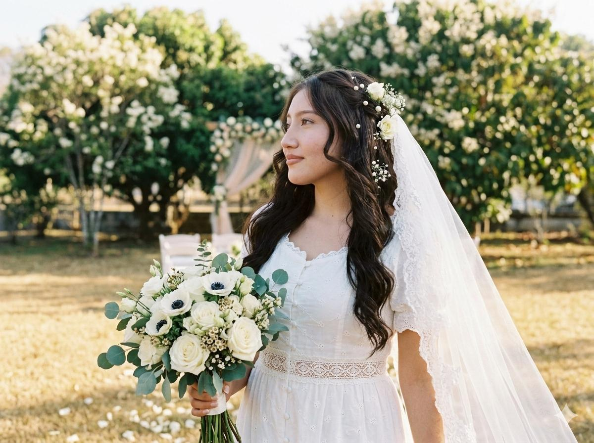
8vo Mesiversario (Abril)
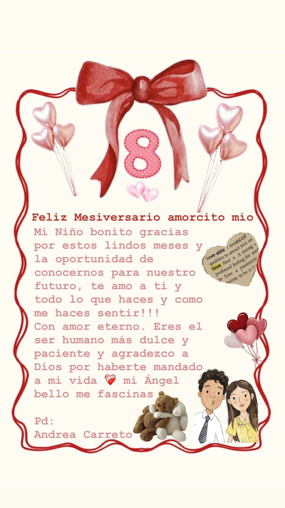
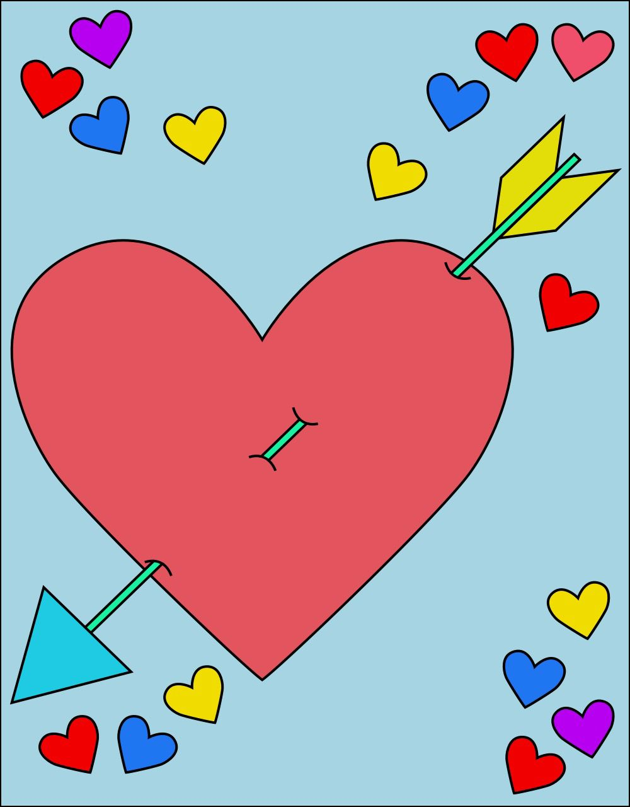
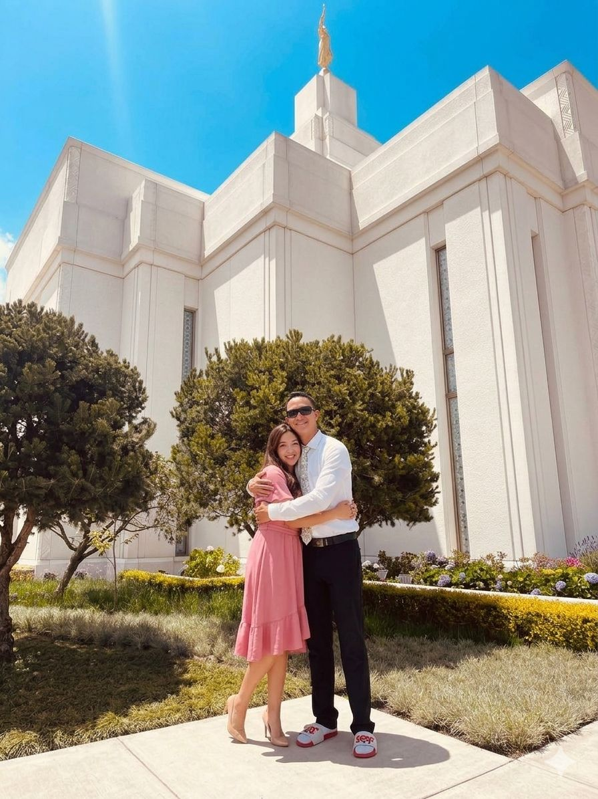
FELICES 8 MEEESEEEEES YUPIIIII, amooooorcitoooooo, gracias por estar, quedarte y elegirme en tu vida, de darme el privilegio y la oportunidad y posibilidad de ser el hombre que more contigo, amo cada segundo que paso contigo, y siento cada vez que en vez de estar a la distancia, estamos presentes uno con el otro. Amo nuestra relación porque estas tu 🌷, te amo a ti y quien eres, eres mi anestesia cuando tengo dias tristes, mi motivación cuando estoy desanimado, la razón por la cual soy feliz, y la persona por la cual me haces amar de verdad 🤍, dejar de mi mismo para unirme a ti y ser 1 💍. Te amo mi mami rica❤️, mi mujer amada, mi chiquita asombrosa, me fascinas y pronto podamos casarnos 🤵♂️👰♀️juntitos, felices 8 meses mi vida, con mucho amor🥰 , este mensaje se lo entrega: Tu nene chocolatoso esclavizao 👮♂️. Te amo, asi traes mi corazón, viendo y sintiendo lo hermoso de amor gracias a ti 💙, cada color tiene un significado, y cada uno representa como me siento a tu lado ❤️, cada vez me enamoro más y más 💗, haces de mi vida unica y especial, porque estar contigo no es nada común y usual, sino que podemos llamarlo mágico y celestial 💛. iMessages: AMORCITO, FELICES 8 MESESOTEEEEES, gracias por ser parte de mi vida, unirte a mi y caminar conmigo en este maravilloso tiempo, agradezco la oportunidad que tenemos de ser parte de la iglesia del Señor, porque por medio de el y de su reino, con un sabio proposito y gracias a la mision nos ha unido, te amo dulzura, eres esa sal que menciona El Salvador, le das sabor a mi vida, te amo novia preciosa, mi mujer y futura esposa, con quien deseo casarme y sellarme para vivir juntos en la eternidad a tu lado.
9no Mesiversario (Mayo)
FELIZ 9NO MESIVERSARIO TESORO MIOOO, TE AMO CON TODO MI CORAZOOON, AMO QUE TENGAMOS 9 MESES JUNTOOOOOOOS, eres la persona que ha cambiado más mi vida, con quien más he madurado, con quien he dado mi corazón siempre, con quien siempre he deseado tener a mi lado, y esto es solo una pequeña demostración de todo el amor que te tengo, te amooooooooo
10mo Mesiversario (Junio)
De mi para ti
Mi regalo Musica para ti mi reinaDe ti para mi
Tu musica para miFeliz Mesiversario amorcito lindo mío de mi vida Mi sol de medio día que me da dolor de cabeza (bromas) jajaja Te amo mucho y más de lo que mis palabras puedan decir o expresar, agradezco eternamente a Dios por que estás a mi lado y haces que mis días sean lindos 💗💗💗💗💗 Gracias por estar en esos días no tan buenos, tristes, estresados peeeerooo eso me da una lección, aun así nos seguimos eligiendo. Gracias por ser mi calma amor divino mío
11vo Mesiversario (Julio)
De mi para ti
Escuche una frase en la boda del viernes que me hizo pensar en nosotros y quiero personalizarla a nosotros como yo la medité: suelo ser muy cariñoso a mi manera de amar, suelo estar feliz, muy apegado y con muchos deseos de estar a tu lado, y aunque estos sentimientos no desaparecen, se que a veces puedo ser frio y silencioso cuando me siento dolido, a veces respondo sarcasticamente y otras veces me dejo llevar de mis sentimientos, pero algo no cambiara jamás, que yo te elijo cada día por el amor que te tengo, las risas, las horas que hemos quedado hasta tarde, las llamadas imprevistas, las pequeñas citas, los acontecimientos que han sucedido que hemos compartido me han hecho conectar mi corazón contigo, y han hecho parte de lo que he vivido muy especial y te haz convertido en mi corazón, ¿ te gustaría permanecer en este camino a mi lado y seguir creando nuevas vivencias por toda la vida?
De ti para mi
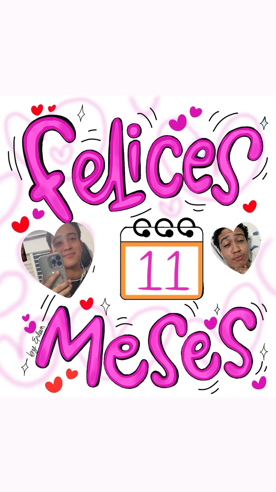